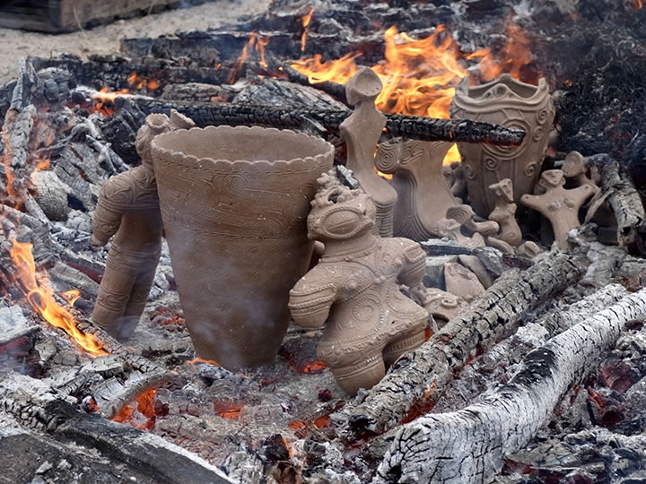

― これまでのイベント（記録） ―
|  |
「第１５回秋の縄文野焼き祭り」当日は、秋めく絶好の縄文野焼き日和！
縄文の炎が作品をつつみ、ゆらめき、渦巻いて空に立ちのぼり、あらたな生命を吹き込みます。
=∴=∵=∴=∵=∴=∵=∴=∵=∴=∵=∴=∵=∴=∵=∴=∵=∴=∵=∴=∵=∴=∵=∴=∵=∴=∵=∴=
《縄文野焼き》
朝８時、野炉を乾かすために火を入れる。
夜露にぬれた木々や枝葉に朝の光が差し始めました。
法曽焼同好会員の人たちが準備のために早朝から動いてくれています。
陶芸教室にいつも通っている岡山市の女性も早々と到着、やる気満々です。
この日野焼きするのは市内の本郷小４年と矢神小４年の親子２団体、一般の陶芸教室生と法曽焼同好会員、
それに村上原野陶芸指導員と猪風来の作品など全部で215点の作品。
本郷小はとても愉快な縄文シーサー、矢神小はちょっと難しいけれど縄文土器に挑戦しました。
作品を火のそばであぶってから真ん中に並べると、長くおおきな火の円陣ができました。
また、猪風来と村上原野による国宝土偶４点を含む土偶の再現制作したものがひときわ目を引きます。
１５回目の野焼きともなると野焼きのスタッフも手慣れたもので、機敏な動きと慎重な気配りで木を運び
火を燃やしつづけます。
温度の高まりをみて、いよいよ最後のクライマックスへ。
皆でいっせいに枝やススキを投じ、燃え上がる炎が作品たちをすっぽりと覆う。
火柱が高く上がり“火の子宮”の中で作品に新たな命が宿る瞬間。
燃え落ちた火の中にあらわれた作品は、火からいただいた土と炎の力強さに満ちみちています。
作品はひとつの割れもなく完璧な焼き上がりの大成功！
スタッフの皆さんの火にあぶられ真っ赤になった顔も充実感と感動に輝いていました。ご苦労様でした！

|
=∴=∵=∴=∵=∴=∵=∴=∵=∴=∵=∴=∵=∴=∵=∴=∵=∴=∵=∴=∵=∴=∵=∴=∵=∴=∵=∴=
《縄文体験コーナー》
「粘土でつくろう」のコーナーでは、小さい子たちが粘土でにぎり地蔵づくりをしました。
ちいさな手で握った手の跡にはどんな思いが込められているのかな？
ここでつくった作品は１１月に野焼きして出来上がる予定です。
人気の縄文土器の煮炊き体験では、２つの土器でタカキビの団子汁を作りました。
まずデンプンで内側を目詰まりさせ、まわりに火を焚いて土器をあたためてから、水をそそいで沸騰を待ちます。
しっかり作られた土器でないと水はいつまでも沸きません。
いったん沸いて暖まると保温力があるのが土器の特長です。縄文人はスゴイ！
高梁市から来られたお客様もお手伝いいただき、みんなで舌鼓を打ちました。
=∴=∵=∴=∵=∴=∵=∴=∵=∴=∵=∴=∵=∴=∵=∴=∵=∴=∵=∴=∵=∴=∵=∴=∵=∴=∵=∴=
《販売コーナー》
法曽焼同好会女性部特製の美味しい「大山おこわ」がたくさん並びました。
新発売の「法曽焼湯呑み茶碗」と法曽茶も登場！
また、応援販売で大房ピオーネの大特売や、懐かしい流し焼きも作り振る舞っていただきました。
=∴=∵=∴=∵=∴=∵=∴=∵=∴=∵=∴=∵=∴=∵=∴=∵=∴=∵=∴=∵=∴=∵=∴=∵=∴=∵=∴=
《縄文野焼き大賞》
焼き上がった作品の中から、縄文野焼き大賞選考委員会により縄文野焼き大賞など４点が選ばれました！
今年もみな力作ぞろいで大変な選考となりました。
選考の結果次の方々の受賞が決まり、賞状、記念品（猪風来作土偶）と賞品（法曽茶）がそれぞれ贈られました。
（敬称略）
○縄文野焼き大賞
縄文土器 三河井 薫(みかわいかおる) 岡山市
○縄文野焼き猪風来美術館館長賞
縄文オブジェ 日笠 久市(ひかさひさいち) 新見市法曽
○縄文野焼き法曽焼同好会会長賞
縄文シーサー 奈尾 太陽(なおたいよう) 本郷小４年生
○縄文野焼き新見市教育長賞
縄文土偶 難波 愛心(なんばあこ) 矢神小４年生
受賞作は１０月２３日～１１月２５日まで猪風来美術館に展示いたします。
=∴=∵=∴=∵=∴=∵=∴=∵=∴=∵=∴=∵=∴=∵=∴=∵=∴=∵=∴=∵=∴=∵=∴=∵=∴=∵=∴=
《ＮＨＫ日曜美術館「土偶」放映》
野焼き祭り当日に猪風来出演のＮＨＫ日曜美術館『土偶 命の息吹から生まれたアート』が放映されました。
会場では要望に応えてテレビを設置、手を休めて番組鑑賞をしました。
猪風来や美術館が出る度に大いに盛り上がり、縄文や土偶の本質に迫る内容にうなずきながら見入っていました。
番組を見て広島や呉など遠くから会場に駆けつけてくれたお客様もおりました。
→ 猪風来 ＮＨＫ日曜美術館『土偶 命の息吹から生まれたアート』に出演！
【放送日】ＮＨＫ Ｅテレ １０月１４日（日）午前９時～９時４５分
【再放送】ＮＨＫ Ｅテレ １０月２１日（日）午後８時～８時４５分
=∴=∵=∴=∵=∴=∵=∴=∵=∴=∵=∴=∵=∴=∵=∴=∵=∴=∵=∴=∵=∴=∵=∴=∵=∴=∵=∴=
| 【第１５回「秋の縄文野焼き祭り」チラシ】 →（表面）PDF版を開く →（裏面）PDF版を開く |